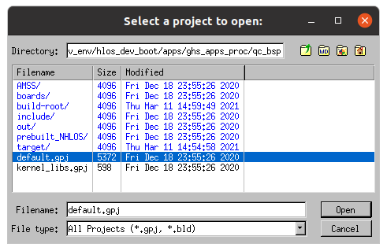
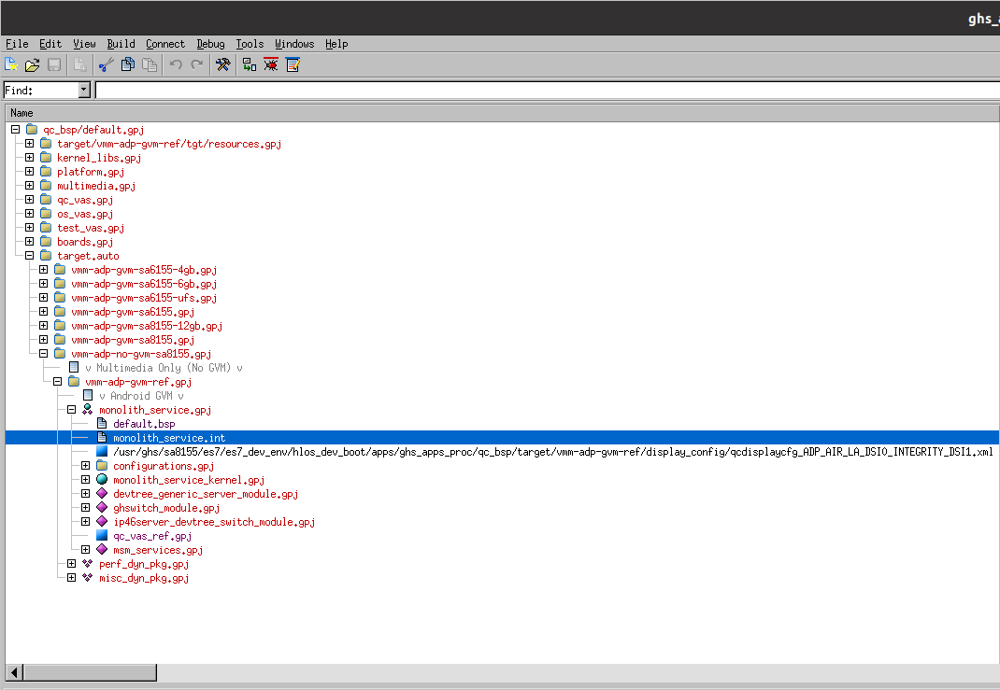

Building a monolith project
This tutorial will guide you through building a monolith INTEGRITY project for a Qt example application. You can select any Qt example application that uses the Supported Qt modules.
Before building the monolith INTEGRITY project, prepare your build environment by running the setEnvironment.sh script. For more information about the script, see Creating a set environment shell script.
source ~/setEnvironment.sh
Building the Qt application
CMaketoolTo build the application against Qt6 using CMake, run the following commands in a terminal:
<Qt installation path>/bin/qt-cmake <Qt example application path>/CMakeLists.txt cmake --build .
Where,
qt-cmakeis the wrapper script that calls CMake to configure your project with appropriate include paths.qmaketoolTo build the application against Qt6 using qmake, run the following commands in a terminal:
<Qt installation path>/bin/qmake <Qt example application path>/application.pro make
Building a monolith project
The board support package (BSP) for the Qualcomm Snapdragon 8155P board provides a build script to create a set of images for board partitions:
/work/ghs/sa8155/es7/es7_dev_env/hlos_dev_boot/apps/ghs_apps_proc/build_ghs.sh
Add a Qt application to a build by adding it into the monolith-service.int file:
- Start MULTI Launcher.
- Select Components > Open Project Manager.
- Select the project file default.gpj under the /work/ghs/sa8155/es7/es7_dev_env/hlos_dev_boot/apps/ghs_apps_proc/qc_bsp directory:

MULTI application shows a window with a list of project files from the chosen folder.
- Select Open.
In the MULTI Project Manager view, you should see a tree structure of the opened project.
Go through the default.gpj sub projects:
- Select target.auto vmm-adp-no-gvm-sa8155.gpj > vvm-adp-gvm-ref.gpj > monolith-service.gpj. You can observe the project structure and edit a project's files.
- Select monolith-service.int

Selected monolith-service.int file is highlited in the project tree.
- Right-click on the file, then select Edit from the context menu.
- Add the following lines at the end of the file.
AddressSpace Name myappname Filename /path/to/your/app/executable MemoryPoolSize 0x2700000 Language C++ HeapSize 0x90000 Task Initial StackSize 0x80000 StartIt false EndTask Extendedmemorypoolsize 0x300000 EndAddressSpace
Note: Replace </path/to/your/app/executable> with a path to your application executable.
- Run the build script.
bash /work/ghs/sa8155/es7/es7_dev_env/hlos_dev_boot/apps/ghs_apps_proc/build_ghs.sh
Your monolith project is now ready to be flashed on to the board.